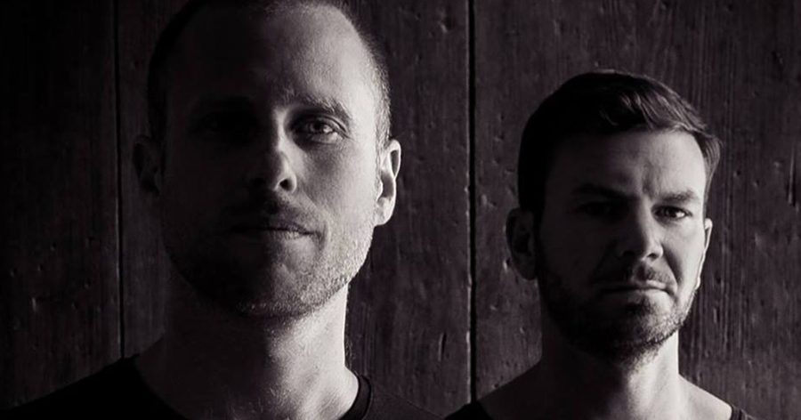

Audiojack Offer a Hypnotic Look “Behind the Curtain” With Heads-Down Tech Cut


Damian Lazarus’ London-based Crosstown Rebels has a suite of house and techno’s finest on its release roster, one of which is the Leeds-born and Ibiza-based Audiojack, who are surely among the best out there when it comes to producing heads-down hypnotic dance experiences. The duo have their two-track Inside My Head EP set to land this Friday, and we’ve got our hands on the special cut on the B-side that we’re previewing in the lead up.
A stripped-back groove that holds out on any big hooks or breakdowns in favor of pure dancefloor power, “Behind the Curtain” features an industrial white noise zipping around Audiojack’s beautifully-produced grooves, as well as a Wurlitzer piano also nipping in and out of the mix. The duo says it’s a track that’s gradually formed in different stages over the past few years.
“It’s a firm mix favorite and one of the most ID requested tracks when we’re playing in the clubs,” says Audiojack. “Much of what you hear is made using random noise generators, so every take we did was different. The robotic industrial sounds contrast with the distorted Wurlitzer piano, the real instruments almost rebelling against the machines.”
Available February 15 via Crosstown Rebels.
Follow Audiojack on Facebook | Twitter | SoundCloud
Follow Crosstown Rebels on Facebook | Twitter | SoundCloud